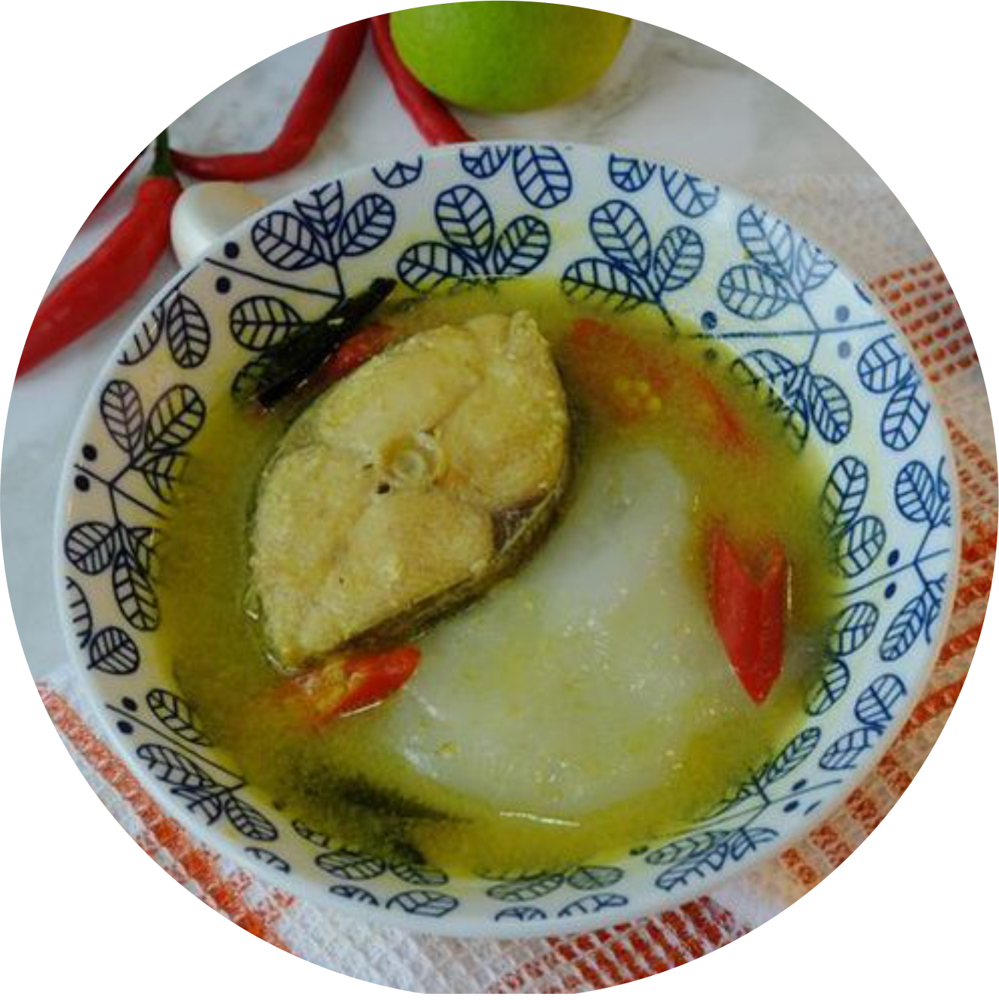

 MORE >>
MORE >>
PAPEDA KUAH KUNING
Papeda adalah makanan berupa bubur sagu khas Maluku dan Papua yang biasanya disajikan dengan ikan tongkol atau mubara yang dibumbui dengan kunyit. Papeda berwarna putih dan bertekstur lengket menyerupai lem dengan rasa yang tawar. Papeda merupakan makanan yang kaya serat, rendah kolesterol, dan cukup bernutrisi.